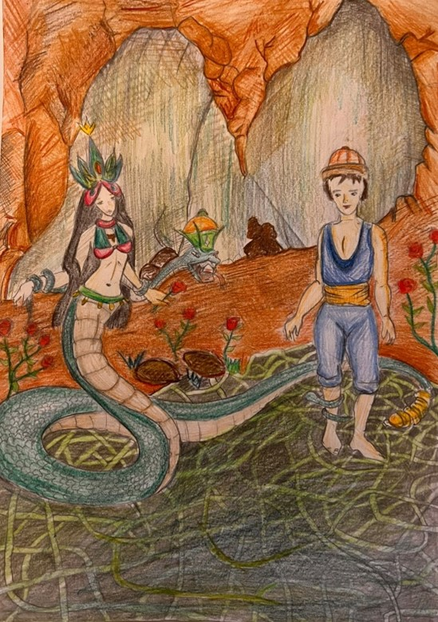

Ben Şahmaran… Başı insan başı, gövdesi yılan biçiminde olan bir masal kahramanıyım. Yılanların padişahıyım. Bir mağaranın zemini altında bağ ve bahçelik bir yerde yaşarım. Baş kısmım, genellikle bir kadın başı görüntüsüne sahiptir. Mağaranın zemini altındaki bu yerde olmamın sebebini, insanoğlunun şerrinden kaçmak istememdendir. Bir yılan görünümüne sahip olmam, doğal olarak bir yılan gibi yeraltında yaşamamı gerektirmez mi zaten? Bir taht üstünde oturur, insan gibi konuşurum. Yeraltındaki hazinelerin koruyucusu olan ben Şahmaran, masallarda sık sık yeraltına inen masal kahramanlarıyla karşı karşıya gelirim. Bu kahramanların çoğu (örneğin şu hekimlerin piri Lokman, Keloğlan), hastalığına şifa arayan bir padişah ya da vezirin zoruyla yeraltına inerek etimden almaya gelirler. Bu padişahlara ya da vezirlere şifa olmam, aksine etimin zehirli yerinden yemelerini sağlayarak ölmelerine sebep olurum. Bir şekilde yeraltına inip de beni görenlerin sırtında yılan pulları meydana gelir. Masallarda beni görenler, sırtlarındaki yılan pullarından tanınırlar. Bundan dolayı da benim bulunduğum yere inerek etimden almaya zorlanırlar. Beni görenlerin benden başkalarına söz etmelerini bana yapılmış bir ihanet sayarım. Benimle ilgili bir masalın olay örgüsü şöyledir: Bir kadının Lokman adlı bir oğlu varmış. Anası bir gün Lokman’ı üç arkadaşıyla oduna göndermiş. Lokman tuvalet ihtiyacını gidermek bir yerde oturmuşken elindeki bıçakla yeri eşelemiş; orada bir bal kuyusu bulmuş. Arkadaşlarını çağırmış, birlikte kuyunun içindeki balı yukarı çekmeye başlamışlar. En sonunda Lokman kuyunun dibinde kalan balı çıkarmak için kuyuya inmiş; arkadaşları, açgözlülüklerinden, onu orada bırakıp kuyunun ağzını kapatmışlar. Lokman, kuyunun içinde bir deliği genişletip bir başka dünyaya gelmiş. Burayı gezerken Şahmaran’a rastlamış. Şahmaran, ona yardım etmiş Lokman burada yaşamaya başlamış. Bir süre sonra Lokman yukarı çıkmak istemiş; Şahmaran, yerinin öğrenileceği endişesiyle onu çıkarmak istememiş. Günün birinde Şahmaran, yalvarmalara dayanamayıp Lokman’ı serbest bırakmış. Lokman, memleketine dönmüş; başından geçenleri annesine anlatmış. Bir gün o devrin padişahı hastalanmış; doktorlar sadece Şahmaran’ın etinden iyileşeceğini söylemişler. Padişahın bilginlerinden biri, Şahmaran’ı gören kişinin etinin pul pul olacağını söylemiş. Herkesi hamama sokmuşlar, en sonunda Lokman’ı yakalamışlar. Lokman’a baskı yapılınca Lokman, Şahmaran’ın yerini göstermiş. Şahmaran, Lokman’a “Sen bana kötülük yaptın, ben sana gene de iyilik yapacağım; beni kesecekler zehirli tarafımı sana yedirecekler, zehirsiz tarafımı padişaha yedirecekler, tabakların yerini değiştir.” demiş. Lokman, Şahmaran’ın dediğini yapmış, zehirli tarafı padişah yer yemez ölmüş, Lokman da zehirsiz tarafı yiyip kurtulmuş.
